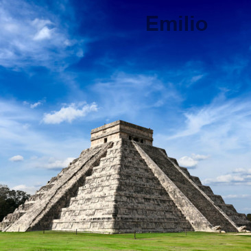

Arqueología
Sitios arqueológicos más populares de Yucatán:
1. Chichén Itzá: Una de las nuevas siete maravillas del mundo moderno. Este antiguo centro político y cultural maya es famoso por el monumental Templo de Kukulcán (El Castillo), donde durante los equinoccios se puede observar el asombroso descenso de la serpiente emplumada proyectado por la luz del sol.
2. Uxmal: Joya arquitectónica del estilo Puuc, caracterizada por sus fachadas ricamente decoradas con grecas y mascarones del dios Chaac. Destaca de manera impresionante la Pirámide del Adivino, una estructura única en el mundo maya por tener una base elíptica y esquinas redondeadas.
3. Mayapán: Conocida como la última gran capital de la civilización maya en la península antes de la llegada de los españoles. Es una espectacular ciudad amurallada que cuenta con una pirámide principal que es una réplica a menor escala de la de Chichén Itzá, ideal para explorarla de forma más tranquila.